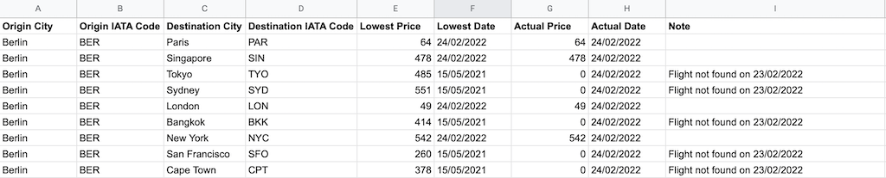

Flight Deals

üóì Added: February 23, 2022 | ‚öôÔ∏è Updated: -
Information
Flight deals is an automated flight price search and notification program. It’s designed to be run by a task manager to check flight prices on (at least) a daily basis. The program was inspired by my price tracking websites. Nowadays, there a quite a lot of deals checkers. In order to use them, you have to register with your email to get a price notification, mostly on a daily basis. This code can be run on l local computer or be deployed on a task-managing website. It’s enough to run it once a day.
I got a quite satisfactory result when running the code with 9 destinations. The computational cycles only last a few seconds. On my slowest computer, it took only about 30 seconds to finish the process. It might be faster or slower also depending on how fast the data can be retrieved from API calls.
I recently made a few updates to allow the program to run more flexibly. Once the could is deployed, you can change the destination on a google sheet. In order to successfully retrieve the right data, you must spell the destination name (City) and IATA Code correctly. It is no need to make any changes to the code.
Repository: Flight Deals
Features
- Getting latest flight deals
- Compare latest deals with expected/previous prices
- Save all the flight data to a google sheet on google drive
- Send a discord message when a deal or no is found
- Send an error message when an error occurred between the process
How to set up
-
Setup a google sheet as the template below:
Origin City: Full name of the origin cityOrigin IATA: IATA code of the origin airport. It is IMPORTANT to correctly spell the city’s IATA codeDestination City: Full name of the destination cityDestination IATA Code: IATA code of the destination airport. It is IMPORTANT to correctly spell the city’s IATA codeLowest Price: Lowest price since running the program. In the initial run please enter your expected price. This cell will be replaced with a lower price in the futureLowest Date: Date of the lowest price detectedActual Price: Current price as of running the programActual Date: Current date as of running the programNote: Algorithm note automatic generated by the code

-
Fill all the information in the
service_account.jsonfile.-
Personal data from kiwi API:
type: type of the APIproject_id: your project idprivate_key_id: your personal key id of the current projectprivate_key: your personal key of the current projectclient_email: personal client emailclient_id: your personal client id
-
Google API
auth_uri: authentication uritoken_uri: authentication token uriauth_provider_x509_cert_url: api providerclient_x509_cert_url: api url
-
-
Fill all the data in
account_file.json-
Google sheet data
spread_sheet_id: the id of the google spreadsheetspreadsheet_range: range of the data on the google spread sheet. Ex: prices!A1:I10SHEET_NAME+!+FIRST_CELL+LAST_CELLsheet_name: name of the sheetdefault_origin_city: full name of the origin citydefault_origin_IATA_code: IATA code of the origin city
-
Kiwi API
tq_endpoint: kiwi API endpointtq_api_key: kiwi API key
-
Discord webhook
discord_webhook_stock: discord webhook URL of the respective chat
-
-
Run
main.py -
The search result will be sent to your discord server with the following data;
verification alert: if a city IATA code is not correct a price search for that city can’t begin.lowest price: will be sent only if the new price is lower than the current listed lowest price
Change Log
-
23.02.2022:
- Upload to GitHub
- Minor bug fixes
-
15.07.2021: Created